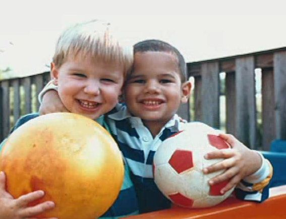
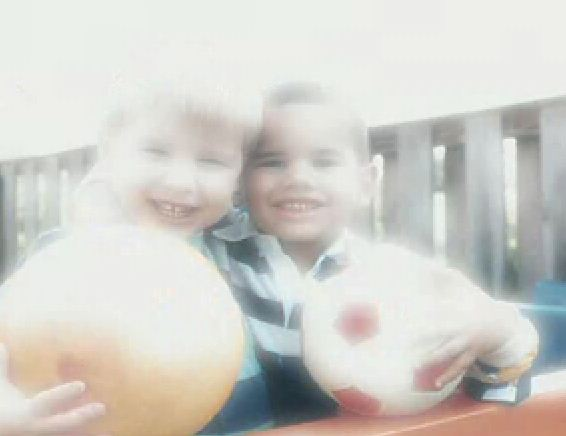

Types de handicaps
Cécité
- Le W3C définit la cécité comme une « perte de vision importante incorrigible aux deux yeux ».
- Les personnes atteintes de cécité :
- utilisent un logiciel de lecture d’écran pour convertir le texte en parole ou en braille;
- naviguent dans le concept à l’aide du clavier;
- écoutent la description auditive de la vidéo ou lisent la transcription;
- se fient à des structures de page HTML codées convenablement (comme des listes, des en-têtes et des tableaux) et à des commandes (comme des liens, des boutons et des commandes de formulaire) pour lire et naviguer dans le concept et exploiter ses fonctions.
Vidéo : Comment les aveugles utilisent l'internet
Concept visant la cécité
- Fournir des équivalents textuels pour les images;
- Fournir des transcriptions descriptives ou une audiodescription pour la vidéo;
- Ne pas utiliser la couleur comme seul moyen visuel pour transmettre de l’information;
- S’assurer que toutes les fonctions sont utilisables à l’aide d’un clavier;
- Baliser le contenu avec une structure et une sémantique appropriées (en-têtes, repères, tableaux, listes, etc.);
- Fournir le nom, le rôle et la valeur des commandes personnalisés.
Malvoyance
- Le W3C définit la malvoyance comme suit : « faible acuité (vision qui n’est pas tranchée), vision tunnel (vue seulement au milieu du champ visuel), perte du champ central (vue des bords du champ visuel uniquement) et vision trouble ».
- La malvoyance englobe les personnes atteintes de cataractes, de rétinopathie diabétique, de glaucome, d’hémianopie, de dégénérescence maculaire, de décollement rétinien, etc.
-
La perte de vision peut prendre plusieurs formes et être légère ou plutôt extrême. Par exemple, partons du principe que cette image correspond à une vision normale :
 -
Certaines personnes présentent une hypersensibilité aux reflets :
 -
Certaines personnes peuvent être daltoniennes :

-
Certaines personnes peuvent voir une image complète, mais cette image peut être floue ou brouillée :

-
D’autres personnes pourraient voir le centre de l’image, symptôme souvent appelé « vision en tunnel ».

-
D’autres personnes pourraient voir les bords de l’image, trouble souvent appelé « vision périphérique ».

- Un faible contraste crée des obstacles à l’interaction, car les utilisateurs peuvent ne pas être en mesure de déterminer leur emplacement sur une page, l’état des liens et des commandes, de lire du texte ou de déterminer le contenu des images.
- Les personnes malvoyantes peuvent agrandir du texte ou changer les polices de caractères, les couleurs et l’espacement pour rendre le contenu plus exploitable en fonction de leurs besoins.
- Les personnes dont le champ de vision est restreint peuvent ne pas agrandir le texte, mais bénéficier d’un concept réactif (pour réduire l’affichage), d’un regroupement de renseignements connexes et d’un positionnement étroit des étiquettes et des commandes.
Vidéo : Démonstration de la technologie d'assistance �_ Logiciel Zoom Text/h3>
Concept visant la malvoyance
- Assurer un contraste suffisant entre le texte et la couleur de fond;
- S’assurer que la cible et l’état de survol des liens, des boutons et des autres commandes sont bien visibles;
- Établir une distinction visuelle claire entre le contenu (p. ex., le texte) et les commandes (p. ex., les boutons, les liens, etc.);
- Placer les étiquettes près de leurs commandes;
- Utiliser éventuellement la couleur pour aider les utilisateurs à distinguer les différentes zones de la page.
Daltonisme
Le W3C définit le daltonisme comme « la difficulté à faire la distinction entre les couleurs, comme entre le rouge et le vert ou entre le jaune et le bleu, et parfois l’incapacité à percevoir une couleur ».
Les obstacles pour ces utilisateurs se manifestent partout où seule la couleur véhicule un sens. Par exemple, un formulaire indiquant des champs obligatoires avec une étiquette rouge sans astérisque ou un lien en bleu dépourvu de toute autre amélioration visuelle (soulignement, contraste de 3:1 avec un texte voisin, bordure, etc.).
Dans la simulation de daltonisme ci-dessous, les colonnes rouge et verte de l’histogramme sont difficiles à discerner. La solution consiste ici à ajouter un motif de fond, mais les barres pourraient aussi être étiquetées avec du texte visible.
Simulation de daltonisme associé au rouge-vert
Image originale :

Protanopia (red colour blind) simulation:

Exemple type : Utilisation d’un motif de fond
Dans cet exemple, des motifs de fond sont utilisés pour identifier les trois catégories x, y et z. La couleur ne véhicule plus uniquement le sens.

Concept visant le daltonisme
- Assurer un contraste suffisant entre le texte et la couleur de fond;
- Ne pas utiliser la couleur comme seul moyen visuel pour transmettre de l’information (p. ex., associer une étiquette textuelle ou introduire un motif de fond en plus de la couleur);
- S’assurer qu’il est possible de discerner les liens visuellement par rapport au texte voisin avec plus de couleur.
Surdité
W3C définit une déficience auditive comme étant une perte d’audition légère ou modérée dans une des oreilles ou dans les deux (« déficience auditive ») ou une perte auditive importante et non corrigible dans les deux oreilles (« surdité »). Les personnes ayant une déficience auditive ne peuvent pas entendre l’audio, préfèrent le contenu audio sous une autre forme ou accompagné de sous-titres.
La majeure partie du Web est en format visuel ou texte. Il est essentiel de rendre le contenu audio accessible aux utilisateurs ayant une déficience auditive.
Concept visant la surdité
- Prévoir des sous-titres pour le contenu vidéo;
- Fournir une description audio ou une transcription du contenu vidéo;
- Fournir une transcription du contenu audio seulement;
- Fournir une transcription ou une audiodescription pour le contenu vidéo seulement;
- S’assurer que les sous-titres de la vidéo sont synchronisés avec le discours audio et les sons importants;
- S’assurer que les sous-titres/légendes codés sont faciles à lire. Le contraste doit être optimal; la taille doit être appropriée, et les sous-titres sont placés en arrière-plan pour ne pas se perdre dans l’arrière-plan vidéo qui change.
- Les utilisateurs devraient avoir la possibilité d’arrêter, de mettre en pause et d’ajuster le volume du contenu audio (indépendamment du volume du système);
- S’assurer que la transcription identifie les haut-parleurs et comprend tous les dialogues, les sons importants et la narration.
Surdité et cécité
Pour lire, les personnes sourdes et aveugles utilisent un lecteur d’écran doté d’un afficheur braille dynamique, qu’ils manipulent avec leurs doigts.
Les personnes sourdes et aveugles ne peuvent accéder au contenu multimédia (audio seulement, vidéo seulement et vidéo avec audio) qu’au moyen de la transcription associée. Ils ne peuvent pas entendre le son, ni voir la vidéo ou lire les sous-titres. Les fichiers audio nécessitent une transcription de base du contenu audio, et les fichiers vidéo nécessitent une transcription descriptive où l’information audio et visuelle essentielle est communiquée.
Concept visant la surdité et la cécité :
- Certaines considérations s’appliquent aux utilisateurs aveugles et sourds, bien que les sous-titres vidéo ne soient pas accessibles au braille dans la plupart des technologies d’assistance.
- Fournir des transcriptions de base de fichiers audio et des transcriptions descriptives de fichiers vidéo (transcriptions qui comprennent toute l’information audio et visuelle essentielle).
Convertisseur braille
Le convertisseur braille se situe habituellement directement sous le clavier. Les lecteurs d’écran interceptent le contenu de la page et envoient les caractères au convertisseur braille.

Handicaps moteurs
Les handicaps moteurs peuvent faire référence à un large éventail de déficiences physiques.
L’utilisation d’une souris n’est souvent pas une option envisageable. Il se peut que les utilisateurs ne soient pas capables temporairement d’utiliser une seule main en raison d’une blessure, d’une difficulté à utiliser ou à contrôler leurs mains, d’un contrôle moteur limité ou inexistant de leurs membres ou d’une main ou d’un membre manquant.
Les personnes ayant une déficience motrice utilisent souvent d’autres claviers ou dispositifs de saisie qui agissent comme des émulateurs de clavier. Les émulateurs de clavier comprennent un logiciel de reconnaissance de la parole, des dispositifs de commande au souffle, des claviers à l’écran, des logiciels de balayage et d’autres technologies d’assistance.
Il est important de s’assurer que toutes les fonctionnalités du contenu sont utilisables au moyen d’une interface clavier.
Vidéo : Contacteur au souffle
Concept visant les handicaps moteurs
- S’assurer que toutes les fonctions sont disponibles au moyen de la souris et du clavier pour les utilisateurs qui pourraient ne pas être en mesure d’utiliser la souris;
- Permettre aux utilisateurs de modifier ou de désactiver les raccourcis à touche unique;
- Fournir un lien descriptif et un texte de bouton de commande pour ceux qui utilisent un logiciel de saisie vocale;
- Un temps de réponse minimal de 2 minutes doit être prévu avant l’expiration du délai;
- S’assurer que le contenu fonctionne à la fois en orientation horizontale et verticale et ne pas se fier aux techniques de « balayage » ou « faire glisser ».
Troubles de la parole
Les personnes ayant des troubles de la parole ont de la difficulté à produire des sons vocaux et à utiliser les muscles de leur bouche.
Concept visant les troubles de la parole
- S’assurer qu’une solution de rechange aux services vocaux est fournie sous la forme de clavardage, de formulaires, de courriels, etc.;
- Si la page « Nous contacter » comporte un numéro de téléphone, fournir également un moyen de contact textuel (courriel ou formulaire « pour nous joindre » accessible);
- S’assurer que toute fonction de recherche vocale comporte une option de recherche textuelle.
Troubles cognitifs, d’apprentissage et neurologiques
Les invalidités cognitives représentent, et de loin, le type d’incapacité le plus courant. Selon le W3C-IAW, les troubles cognitifs, d’apprentissage et neurologiques affectent n’importe quelle partie du système nerveux et influent sur la façon dont les gens entendent, bougent, voient, parlent et comprennent l’information. Les troubles cognitifs, d’apprentissage et neurologiques n’affectent pas nécessairement l’intelligence d’une personne.
Exemples de déficiences cognitives, d’apprentissage et neurologiques
- Trouble déficitaire de l’attention avec hyperactivité (TDAH)
- Il s’agit d’une difficulté à se concentrer sur une seule tâche, à se concentrer pendant de plus longues périodes ou capacité à être facilement distrait.
- Trouble du spectre autistique (TSA) (comprend l’« autisme », le « syndrome d’Asperger » et le « trouble envahissant du développement » [TED])
- Il inclut les déficiences des capacités de communication et d’interaction sociales, et parfois des habitudes et des intérêts restreints.
- Déficiences intellectuelles (parfois appelées « troubles d’apprentissage » en Europe et dans d’autres pays, et « troubles du développement » dans d’autres régions)/dt>
- Elles incluent les déficiences de l’intelligence, un apprentissage plus lent ou la difficulté àcomprendre des concepts complexes. Le syndrome de Down est l’une des nombreuses causes de déficience intellectuelle.
- Troubles d’apprentissage
- Il s’agit d’un terme fonctionnel plutôt que d’un problème de santé, et n’est pas défini de manière homogène. En Europe et dans certains autres pays, il s’agit de déficiences intellectuelles, tandis qu’en Australie, au Canada, aux États-Unis et dans d’autres pays, il s’agit de déficiences perceptuelles.
- Troubles de santé mentale
- Ils comprennent l’anxiété, le délire, la dépression, la paranoïa, la schizophrénie et de nombreux autres troubles. Ces états peuvent entraîner des difficultés à se concentrer sur l’information, à traiter l’information ou à la comprendre. En particulier, les médicaments prescrits pour ces troubles peuvent avoir des effets secondaires comme une vision trouble, un tremblement des mains et d’autres déficiences.
- Troubles de la mémoire
- mémoire à court terme limitée; mémoire à long terme manquante ou capacité limitée à se souvenir du langage. La démence est l’une des nombreuses causes de troubles de la mémoire.
- Sclérose en plaques
- lle cause des lésions aux cellules nerveuses du cerveau et de la moelle épinière et peut affecter les capacités auditives, cognitives, physiques ou visuelles, en particulier pendant les poussées.
- Neurodiversité
- Il s’agit d’un terme sociétal plutôt que médical qui décrit la diversité naturelle du fonctionnement neurocognitif, comme le sexe, l’ethnicité, l’orientation sexuelle et le handicap.
- Troubles perceptuels (parfois appelés « troubles d’apprentissage » en Australie, au Canada, aux États-Unis et dans d’autres pays)
- difficulté à traiter de l’information auditive, tactile, visuelle ou sensorielle. Cela peut avoir un impact sur la lecture (dyslexie), l’écriture (dysgraphie), le traitement des chiffres (dyscalculie) ou l’orientation spatiale et temporelle.
- Troubles convulsifs
- ls comprennent différents types d’épilepsie et de migraines, qui peuvent survenir en réaction au clignotement visuel ou à des signaux audio à certaines fréquences ou tendances.
Exemples d’obstacles pour les personnes ayant des troubles cognitifs, d’apprentissage et neurologiques
- Mécanismes de navigation complexes et mises en page difficiles à comprendre et à utiliser;
- Phrases complexes difficiles à lire et mots inhabituels difficiles à comprendre;
- Longs passages de texte sans images, graphiques ou autres illustrations pour mettre en évidence le contexte;
- Contenu en mouvement, clignotant ou scintillant et audio de fond qui ne peut pas être désactivé;
- Navigateurs Web et lecteurs de médias qui ne fournissent pas de mécanismes pour supprimer les animations et l’audio;
- Concepts de pages visuelles qui ne peuvent pas être adaptées au moyen de commandes de navigateur Web ou de feuilles de style personnalisées.
Concept visant les troubles cognitifs, d’apprentissage et neurologiques
Les personnes ayant des troubles cognitifs, d’apprentissage et neurologiques comptent souvent sur :
- un contenu clairement structuré qui facilite l’aperçu et l’orientation;
- l’étiquetage uniforme des formulaires, des boutons et des autres parties du contenu;
- les cibles de lien prévisibles, la fonctionnalité et l’interaction globale;
- différentes façons de naviguer sur les sites Web, comme le menu hiérarchique et la recherche;
- Les options de suppression du contenu clignotant, scintillant, étincelant et d’autre contenu distrayant;
- Texte plus simple complété par des images, des graphiques et d’autres illustrations.
Le guide de rédaction du contenu Canada.ca exige que les sites qui font face au public aient un contenu qui est au niveau de lecture grade 8, et puis les sites qui font face a l’interne un niveau grade 10. Un outil nommé le Flesch-Kincaid Grade Level test, disponible en anglais exclusivement à l’intérieur de Microsoft Word sous les options d’orthographie et grammaire. L’outil de la mesure de lisibilité www.scolarius.com offre une métrique semblable pour le texte français; une mesure entre 50-89 correspond a le niveau primaire d’éducation, entre 90 et 119 au niveau secondaire, et puis entre 150 a 189 au niveau universitaire.
La plupart des renseignements contenus dans cet article proviennent du document de l’Initiative d’accessibilité du Web (IAT) : Capacités et obstacles variés. Shadi Abou-Zahra, éd. Copyright © 2017 W3C® (MIT, ERCIM, Keio). Statut : Mise à jour le 15 mai 2017. https://www.w3.org/WAI/people-use-web/abilities-barriers
Convulsions
Des lumières qui clignotent rapidement ou des effets stroboscopiques dans la vidéo, les graphiques ou l’animation peuvent causer des crises photoépileptiques chez les utilisateurs atteints d’épilepsie photosensible. Ces crises, aussi appelées convulsions, sont des perturbations électriques soudaines et non contrôlées du cerveau qui peuvent causer des préjudices physiques.
Les feux clignotants peuvent déclencher une crise si :
- Des lumières clignotent plus de 3 fois par seconde;
- Le contenu du clignotant est assez grand. Les DACW fournissent une formule complexe ici, mais la règle générale est qu’un contenu clignotant dépassant 21 824 pixels carrés pose problème.
- Le contenu clignotant présente un contraste élevé. Les DACW constituent une autre formule complexe ici, mais il est recommandé d’évaluer le contenu clignotant à l’aide d’un outil comme le Photosensitive Epilepsy Analysis Tool (PEAT).
Comme les utilisateurs peuvent agrandir la page et agrandir la zone clignotante, il est plus sécuritaire de limiter le clignotement de n’importe quelle taille de contenu à un maximum de trois clignotements par période de 1 seconde.
Concept visant les troubles convulsifs
- Ne pas inclure de séquences lumineuses clignotantes de 3 fois ou plus par seconde dans les vidéos, les animations ou les transitions. Si vous ne pouvez pas modifier la source, ne pas l’utiliser.
Déficience de lecture
Difficulté à lire
- Certaines personnes ayant des troubles cognitifs et dyslexiques ont des difficultés à lire.
- Pour les personnes dyslexiques, l’orthographe ou la lecture des mots peuvent être sujettes à des erreurs parce que le codage visuel du texte est difficile.
Simulation de dyslexie
Voici la simulation d’une expérience de lecture dyslexique, où les lettres semblent bouger et changer de place.
Dyslexie - Exemple
Le Bureau de l’accessibilité des TI (BATI) demeure un fournisseur de technologies d’adaptation et un défenseur de l’inclusion des personnes handicapées en milieu de travail. Nous sommes des chefs de file reconnus, déterminés à exécuter notre mandat en matière d’accessibilité, et nous continuons d’offrir un soutien aux employés handicapés. Conformément à la Loi canadienne sur l’accessibilité et en collaboration avec nos partenaires des organismes centraux, nous recommandons des normes, lignes directrices et pratiques exemplaires reconnues à l’échelle internationale.
Concept visant les déficiences de lecture
- Ne pas communiquer uniquement au moyen d’un texte. Compléter le texte avec des images informatives, des vidéos et des enregistrements audio.